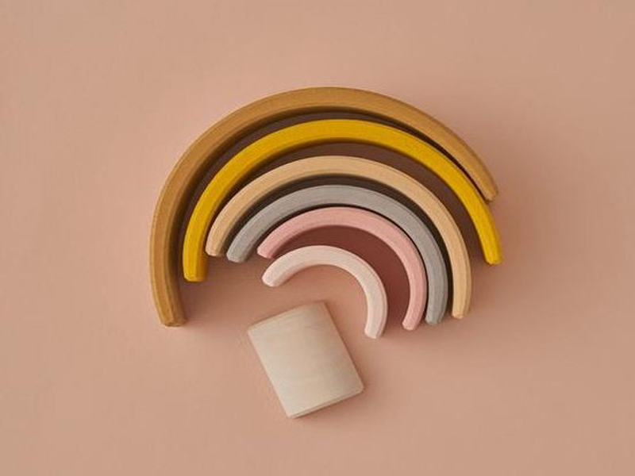
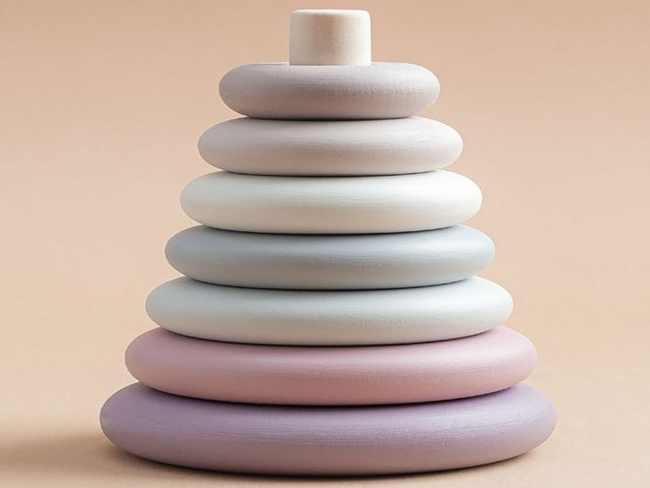

Lo Más Nuevo

Apilador Arcoíris de Madera
Excelente para estimular la creatividad y la imaginación y de realzar el pensamiento espacial.

Ábaco Arcoíris de Madera
Favorece la coordinación mano-ojo y el agarre, fortaleciendo los músculos de las manos y los dedos.

Apilador Piramidal de Madera
Excelente para aprender conceptos matemáticos a través del juego y a clasificar por tamaños.